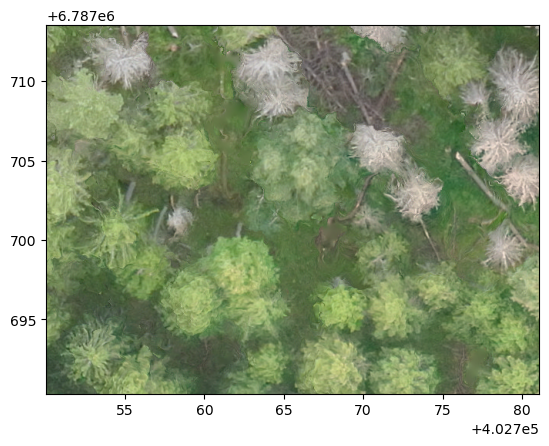
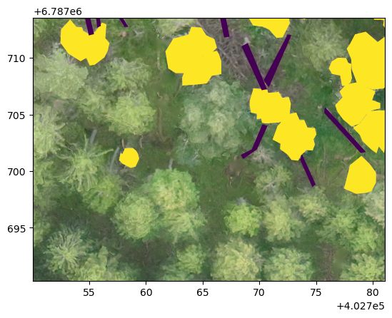
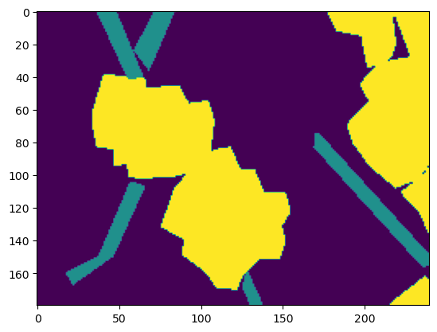
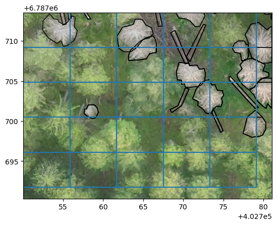
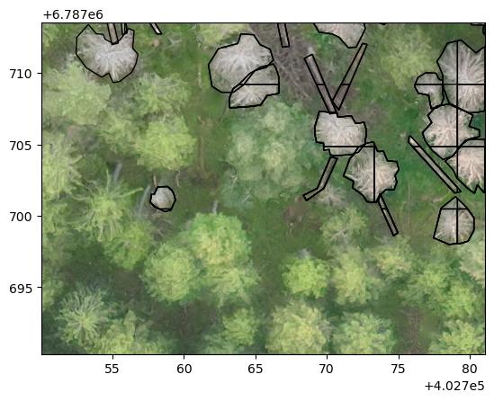
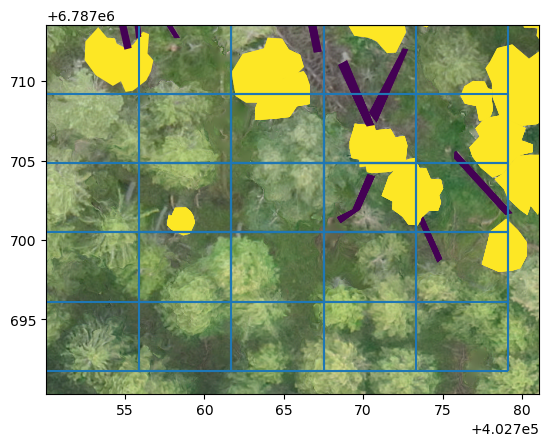
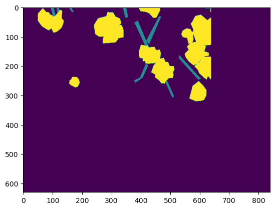
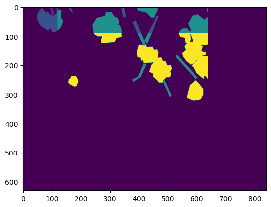

from rasterio import plot as rioplot
import matplotlib.pyplot as pltTiling
Tiling utilities for both raster and vector data
Example area looks like this
f = gpd.read_file('example_data/R70C21.shp')
f.head()
f['label_id'] = f.apply(lambda row: 2 if row.label == 'Standing' else 1, axis=1)
f.to_file('example_data/R70C21.shp')raster = rio.open('example_data/R70C21.tif')
rioplot.show(raster)
With rasterio.plot it is a lot easier to visualize shapefile and raster simultaneously
fig, ax = plt.subplots(1,1)
rioplot.show(raster, ax=ax)
f.plot(ax=ax, column='label_id')
Tiling
Tiler
Tiler (outpath, gridsize_x:int=400, gridsize_y:int=400, overlap:tuple[int,int]=(100, 100))
Handles the tiling of raster and vector data into smaller patches that each have the same coverage.
tiler = Tiler(outpath='example_data/tiles', gridsize_x=240, gridsize_y=180, overlap=(120, 90))Tiler.tile_raster
Tiler.tile_raster (path_to_raster:pathlib.Path|str, allow_partial_data:bool=False)
Tiles specified raster to self.gridsize_x times self.gridsize_y grid, with self.overlap pixel overlap
tiler.tile_raster('example_data/R70C21.tif')Tiler.tile_vector
Tiler.tile_vector (path_to_vector:pathlib.Path|str, min_area_pct:float=0.0, gpkg_layer:str=None, output_format:str='geojson')
Tiles a vector data file into smaller tiles. Converts all multipolygons to a regular polygons. min_area_pct is be used to specify the minimum area for partial masks to keep. Default value 0.0 keeps all masks.
If output_format is geojson, the resulting files are saved into outpath/vectors. If output_format is gpkg, then each file is saved as a layer in outpath/vectors.gpkg.
tiler.tile_vector('example_data/R70C21.shp', min_area_pct=.2)tiler.tile_vector(Path('example_data/R70C21.shp'), min_area_pct=.2, output_format='gpkg')test_eq(len(fiona.listlayers('example_data/tiles/vectors.gpkg')), len(os.listdir('example_data/tiles/vectors/')))Tiler.tile_and_rasterize_vector
Tiler.tile_and_rasterize_vector (path_to_raster:pathlib.Path|str, path_to_vector:pathlib.Path|str, column:str, gpkg_layer:str=None, keep_bg_only:bool=False)
Rasterizes vectors based on tiled rasters. Saves label map to self.outpath. By default only keeps the patches that contain polygon data, by specifying keep_bg_only=True saves also masks for empty patches.
tiler.tile_and_rasterize_vector('example_data/R70C21.tif', Path('example_data/R70C21.shp'),
column='label')tiler.tile_and_rasterize_vector('example_data/R70C21.tif', 'example_data/R70C21.shp',
column='label', keep_bg_only=True)with rio.open('example_data/tiles/rasterized_vectors/R1C3.tif') as i: im = i.read()
plt.imshow(im[0])
Reversing
untile_vector
untile_vector (path_to_targets:pathlib.Path|str, outpath:pathlib.Path|str, non_max_suppression_thresh:float=0.0, nms_criterion:str='score')
Create single GIS-file from a directory of predicted .shp or .geojson files
copy_sum
copy_sum (merged_data, new_data, merged_mask, new_mask, **kwargs)
Make new pixels have the sum of two overlapping pixels as their value. Useful with prediction data
untile_raster
untile_raster (path_to_targets:pathlib.Path|str, outfile:pathlib.Path|str, method:str='first')
Merge multiple patches from path_to_targets into a single raster`
Untile shapefiles and check how they look
untile_vector(f'example_data/tiles/vectors', outpath='example_data/untiled.geojson')81 polygonsuntile_vector(f'example_data/tiles/vectors.gpkg', outpath='example_data/untiled_gpkg.geojson')81 polygonsPlot with the tiled grid.
untiled = gpd.read_file('example_data/untiled.geojson')
fig, ax = plt.subplots(1,1)
rioplot.show(raster, ax=ax)
tiler.grid.exterior.plot(ax=ax)
untiled.plot(ax=ax, column='label_id', facecolor='none', edgecolor='black')
If allow_partial_data=False as is the default behaviour, tiling is done only for the area from which full sized patch can be extracted. With allow_partial_data=True, windows can “extend” to empty areas. This is useful with inference, when predicted areas can have wonky dimensions.
tiler_part = Tiler(outpath='example_data/tiles_partial', gridsize_x=240, gridsize_y=180, overlap=(120, 90))
tiler_part.tile_raster('example_data/R70C21.tif', allow_partial_data=True)tiler_part.tile_vector('example_data/R70C21.shp', min_area_pct=.2)
tiler_part.tile_vector('example_data/R70C21.shp', min_area_pct=.2, output_format='gpkg')
test_eq(len(os.listdir('example_data/tiles_partial/vectors/')), len(fiona.listlayers('example_data/tiles_partial/vectors.gpkg')))Untile shapefiles and check how they look
untile_vector(f'example_data/tiles/vectors', outpath='example_data/untiled.geojson')81 polygonsuntiled = gpd.read_file('example_data/untiled.geojson')
fig, ax = plt.subplots(1,1)
rioplot.show(raster, ax=ax)
untiled.plot(ax=ax, column='label_id', facecolor='none', edgecolor='black')
Plot with the tiled grid.
untiled = gpd.read_file('example_data/untiled.geojson')
fig, ax = plt.subplots(1,1)
rioplot.show(raster, ax=ax)
tiler.grid.exterior.plot(ax=ax)
untiled.plot(ax=ax, column='label_id')
untile_raster can be used to mosaic all patches into one.
untile_raster('example_data/tiles/rasterized_vectors/', 'example_data/tiles/mosaic_first.tif',
method='first')with rio.open('example_data/tiles/mosaic_first.tif') as mos: mosaic = mos.read()
plt.imshow(mosaic[0])
By specifying method as sum it’s possible to collate predictions and get the most likely label for pixels
untile_raster('example_data/tiles/rasterized_vectors/', 'example_data/tiles/mosaic_sum.tif',
method='sum')with rio.open('example_data/tiles/mosaic_sum.tif') as mos: mosaic = mos.read()
plt.imshow(mosaic[0])